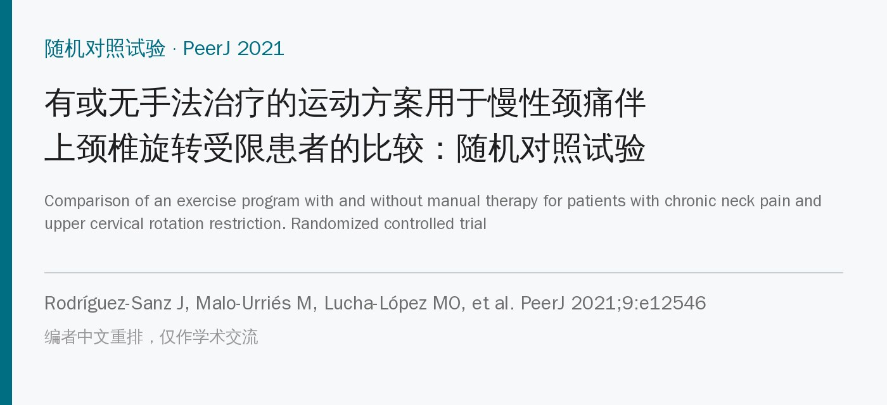
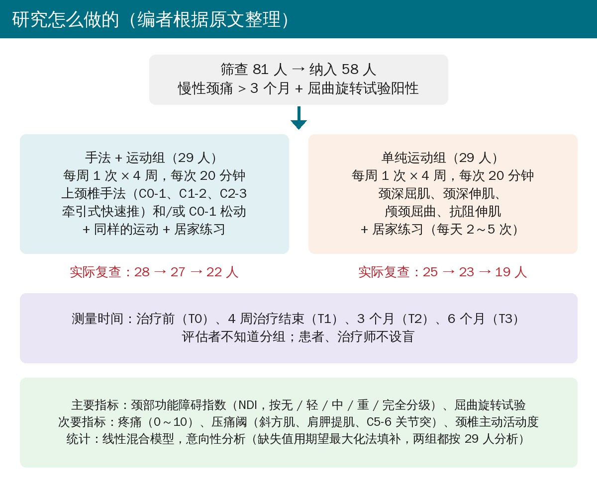
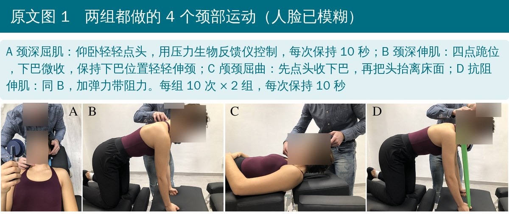
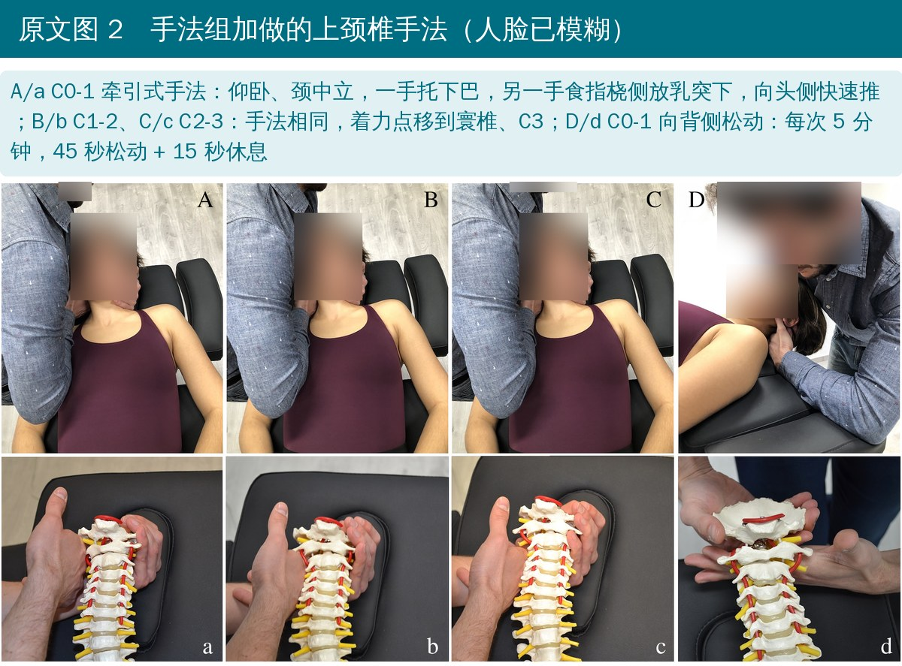
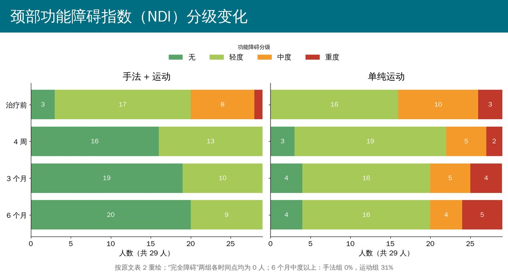
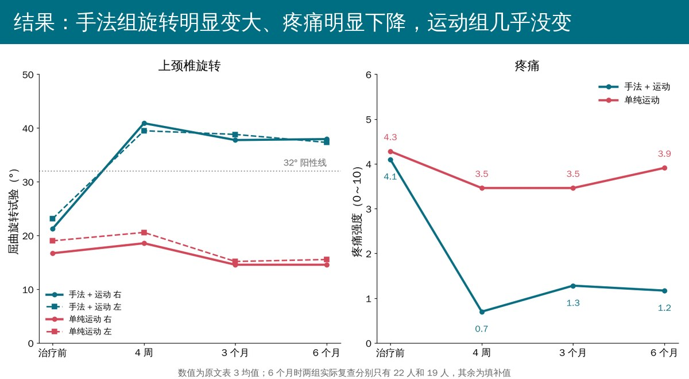

🔖原文信息（编者中文重排）
📚 文献信息
▪ Rodríguez-Sanz J, Malo-Urriés M, Lucha-López MO, López-de-Celis C, Pérez-Bellmunt A, Corral-de-Toro J, Hidalgo-García C. Comparison of an exercise program with and without manual therapy for patients with chronic neck pain and upper cervical rotation restriction. Randomized controlled trial. PeerJ. 2021;9:e12546. doi:10.7717/peerj.12546
▪ 中文题目：有或无手法治疗的运动方案用于慢性颈痛伴上颈椎旋转受限患者的比较：随机对照试验
▪ 作者来自西班牙加泰罗尼亚国际大学、萨拉戈萨大学
▪ 单盲随机对照试验，58 例，随访 6 个月；临床试验注册号 NCT03670719
慢性颈痛的患病率在 5.9%～38.7% 之间，女性更多。颈部运动（深层肌控制 + 整体活动）是公认有效的治疗，但要不要再加手法，研究结论并不一致。
• 颈椎轴向旋转超过 60% 发生在上颈椎（C0-C3）
• 训练颈深屈肌的核心动作“点头”（颅颈屈曲）也主要靠上颈椎完成
• 所以作者推测：上颈椎卡住的人，单靠运动可能练不开，先用手法把活动度恢复，运动效果才出得来
这项试验专门挑了慢性颈痛 + 上颈椎旋转受限的患者，比较“运动”和“运动 + 上颈椎手法”在短期（4 周）、中期（3 个月）和中长期（6 个月）的效果。

🔖研究设计与随访人数（编者根据原文和 CONSORT 流程图整理）
• 18 岁以上，医生诊断慢性颈痛超过 3 个月
• 屈曲旋转试验阳性：仰卧、颈椎被动屈到底再左右旋转，任一侧小于 32°，或两侧相差 ≥ 10°
• 手法检查发现 C0-1、C1-2 或 C2-3 至少一个节段活动度减低
• 排除：手法或运动禁忌、近 3 个月做过相关治疗、红旗征或明显颈部外伤、正在打官司等
两组都是每周 1 次、共 4 次、每次 20 分钟，由同一位有 5 年以上经验的治疗师一对一完成；两组都要求在家把同样的运动每天做 2～5 次，每周视频随访督促。

🔖原文图 1（加中文说明）
• 运动（两组都做）：每组 10 次 × 2 组，每次保持 10 秒，次间休息 40 秒、组间休息 2 分钟
• 第 1 次：仰卧颈深屈肌（压力生物反馈仪）；第 2 次：四点跪位颈深伸肌；第 3、4 次：颅颈屈曲抬头 + 四点跪位弹力带抗阻伸肌

🔖原文图 2（加中文说明）
• 手法组加做：按每个人的受限节段，选 C0-1、C1-2、C2-3 牵引式快速手法（颈中立位、向头侧推，每节段每侧最多 2 次，每次就诊共 2～6 次推），和/或 C0-1 向背侧松动 5 分钟（45 秒松动 + 15 秒休息）
• 按国际骨科手法物理治疗师联合会（IFOMPT）的安全建议操作
• 主要指标：颈部功能障碍指数（NDI，0～50 分，按无 / 轻 / 中 / 重 / 完全分级）、屈曲旋转试验角度
• 次要指标：疼痛（0～10 分）、压痛阈（双侧斜方肌、肩胛提肌、C5-6 关节突）、颈椎主动活动度
• 测量时间：治疗前、4 周治疗结束、3 个月、6 个月；同一位不知道分组的评估者负责
58 人（女性 41 人，平均 49.2 岁）随机分为两组各 29 人。试验过程中没有报告不良事件。

🔖按原文表 2 重绘
治疗前，手法组有 9 人（31%）属于中度及以上功能障碍；4 周治疗结束后就降到 0，一直保持到 6 个月。运动组 6 个月时仍有 9 人（31%）中度或重度，重度人数反而从 3 人变成 5 人。两组差异在三个时间点都有统计学意义（p < 0.001，Cramér V 0.54～0.61）。

🔖按原文表 3 重绘
• 屈曲旋转试验：手法组右侧从 21.3° 增加到 4 周时 40.9°，6 个月仍有 37.9°，越过了 32° 的阳性线；运动组从 16.7° 变成 14.6°，没有改善。6 个月时组间差约 19°
• 疼痛：手法组从 4.1 分降到 0.7 分（4 周），6 个月为 1.2 分；运动组从 4.3 分到 3.9 分，组内变化没有统计学意义。组间差约 2.6 分，超过了 2 分的最小可检测变化
• 压痛阈：手法组所有 6 个点都持续升高，6 个月比治疗前提高约 108～115 kPa，超过 47.2 kPa 的最小可检测变化；运动组没有变化
• 颈椎活动度：4 周时两组没差别，差别从 3 个月起才出现，6 个月时手法组旋转约多出 10°、侧屈多出 4.6°～7.2°、屈多出 8.7°、伸多出 6.6°（组间差为调整后变化值）
作者结论：4 次、每次 20 分钟的“手法 + 运动”，加上居家练习，在功能障碍、上颈椎旋转、疼痛和压痛阈上，短、中、中长期都优于单纯运动；颈椎整体活动度的优势出现在中期以后。作者也承认，脱落率高可能影响结论的外推。
• 脱落多，而且不随机：6 个月时手法组只复查了 22 人，运动组只有 19 人（脱落约 34%）；运动组走的人多是因为“觉得没什么改善”。缺失值用期望最大化法填补后按 29 人分析，填补的前提是数据随机缺失，这里很难成立
• 对照组剂量太低：运动组每周只在门诊练 1 次、共 4 次，居家依从性没有客观记录；“运动无效”不能推广到一般的颈部运动方案
• 没有安慰手法，患者和治疗师都知道分组：手法组多了被“动手”的体验，期望效应和接触时间都可能放大效果；疼痛、NDI 都是自评指标
• 主要指标和干预高度重合：屈曲旋转试验测的正是手法直接作用的上颈椎旋转，改善在意料之中，不等于症状机制被改变
• 单一治疗师、单一中心，作者团队也是这些上颈椎手法研究的主要发表者，效果能否复制到别的治疗师身上需要验证
• 基线不完全平衡：手法组基线屈曲旋转角度更大（21.3° vs 16.7°），无功能障碍的人更多（3 vs 0），重度更少（1 vs 3）
• 统计报告本身有不少错误（见下一节），具体数字的精确度要打折扣
• 表 5 的置信区间装不下点估计：例如右侧屈曲旋转 4 周组间差 17.79°，95% 置信区间却写 6.49～14.99；右侧肩胛提肌压痛阈 6 个月差 139.77 kPa，区间 −0.09～89.96 跨过 0，p 值却是 0.000。表中多数行都有这种问题
• “Cohen d”的数值对不上：方法说用 Cohen d，> 0.8 为大效应，但表 5 的效应量在 0.011～0.725 之间，更像偏 η²；讨论又说疼痛和压痛阈是“大效应量”，按他们自己的标准这些数值只算小到中等
• p 值大于 1：表 4 运动组左旋 3 个月 p = 1.009
• 摘要说“所有指标治疗后都显著更好”：但表 5 中 4 周时颈椎活动度六个方向都没有组间差异；结论部分自己也写活动度是中期以后才改善
• 右侧屈正文与表格不符：正文说 3 个月和 6 个月手法组都更好，表 5 中 3 个月 p = 0.060，不显著
• 表 2 的“组间差（%）”算不对：例如 4 周轻度功能障碍两组是 44.8% 和 65.5%，差 20.7%，表里写 24.1%；3 个月和 6 个月的数字像是互相调换了；4 周重度应差 6.9%，表里写 3.5%
• 人数对不上：表 2 中 6 个月时两组都按 29 人分级，而 CONSORT 图显示实际只复查了 22 人和 19 人，没说明分级是怎么填补出来的；局限部分又说“脱落导致样本量小”，与按 58 人意向性分析的说法矛盾
• “没有不良事件”与随后的描述矛盾：结果开头说任何随访都没有不良事件，疼痛部分又写运动组 3 人在 6 个月随访时报告了轻微、短暂的颈痛加重
• C1-2 的处理说法前后不一：讨论说遵循安全建议，对功能障碍最重的 C1-2 采用“间接”治疗、避免终末范围操作，但方法和图 2B 写明对 C1-2 做了直接的牵引式快速手法
• 样本量计算的自由度有误：两组 × 5 个分级的卡方检验自由度应为 4，原文写 12；G*Power 的网址里还夹着一段无关的期刊网址
• 用词和拼写：esplenio cervicis（西班牙语，应为 splenius cervicis）、Buffalo Groove（应为 Buffalo Grove）、significative、effect side、efficacity
• 慢性颈痛先查屈曲旋转试验：仰卧屈到底再左右转，任一侧 < 32° 或两侧差 ≥ 10° 提示上颈椎旋转受限，这一类人值得考虑上颈椎手法或松动
• 手法和运动搭配用：本研究的做法是每次 20 分钟里先针对受限节段做 C0-1 / C1-2 / C2-3 手法或 C0-1 背侧松动，再做颈深屈伸肌训练
• 运动别只做门诊那 4 次：本研究运动组几乎没改善，很可能和剂量太低有关；实际工作中要保证居家练习的频率和进阶
• 用复测说话：治疗后复查屈曲旋转试验、疼痛评分和 NDI，看是否越过 32°、疼痛是否下降 2 分以上
• 注意安全：上颈椎手法前按 IFOMPT 框架排查血管和红旗征；不会做快速手法的，可以先用 C0-1 背侧松动
• 结论先打个折：脱落高、没有安慰对照、统计报告错误较多，效果大小大概率被高估，需要更大、更严格的试验确认
表 1 两组基线特征
| 指标 | 运动组（29 人） | 手法 + 运动组（29 人） |
|---|---|---|
| 年龄（岁） | 49.72 ± 17.56 | 48.76 ± 14.53 |
| 女性 | 22（75.9%） | 19（65.5%） |
| 病程（月） | 124.38 ± 148.17 | 96.97 ± 96.73 |
| NDI 无 / 轻 / 中 / 重 / 完全 | 0 / 16 / 10 / 3 / 0 | 3 / 17 / 8 / 1 / 0 |
| 屈曲旋转试验 右 / 左（°） | 16.70 ± 9.52 / 19.01 ± 10.33 | 21.26 ± 10.71 / 23.12 ± 8.98 |
| 颈椎屈 / 伸（°） | 48.10 ± 10.93 / 51.48 ± 12.66 | 47.48 ± 12.85 / 53.59 ± 14.36 |
| 侧屈 右 / 左（°） | 27.97 ± 8.59 / 29.38 ± 9.12 | 32.03 ± 9.93 / 30.28 ± 9.83 |
| 旋转 右 / 左（°） | 53.97 ± 12.32 / 55.28 ± 14.34 | 55.66 ± 16.07 / 58.14 ± 16.37 |
| 疼痛（0～10） | 4.28 ± 2.48 | 4.10 ± 1.70 |
| 压痛阈 斜方肌 右 / 左（kPa） | 192.17 / 213.28 | 208.00 / 237.97 |
| 压痛阈 肩胛提肌 右 / 左（kPa） | 180.69 / 190.24 | 213.45 / 223.62 |
| 压痛阈 C5-6 右 / 左（kPa） | 152.86 / 153.90 | 177.59 / 175.76 |
表 3（节选） 各时间点均值 ± 标准差（手法 + 运动组 / 运动组）
| 指标 | 治疗前 | 4 周 | 3 个月 | 6 个月 |
|---|---|---|---|---|
| 屈曲旋转 右（°） | 21.26 / 16.70 | 40.89 / 18.56 | 37.76 / 14.56 | 37.94 / 14.56 |
| 屈曲旋转 左（°） | 23.12 / 19.01 | 39.49 / 20.57 | 38.81 / 15.17 | 37.32 / 15.53 |
| 疼痛（0～10） | 4.10 / 4.28 | 0.70 / 3.46 | 1.28 / 3.46 | 1.17 / 3.91 |
| 屈（°） | 47.48 / 48.10 | 47.84 / 51.11 | 51.64 / 48.89 | 54.43 / 46.34 |
| 伸（°） | 53.59 / 51.48 | 57.24 / 52.78 | 60.30 / 52.61 | 63.59 / 54.85 |
| 侧屈 右（°） | 32.03 / 27.97 | 31.75 / 28.73 | 33.97 / 29.03 | 38.21 / 29.58 |
| 侧屈 左（°） | 30.28 / 29.38 | 33.12 / 28.93 | 35.50 / 29.61 | 39.49 / 31.43 |
| 旋转 右（°） | 55.66 / 53.97 | 59.58 / 55.98 | 66.89 / 56.92 | 70.34 / 58.72 |
| 旋转 左（°） | 58.14 / 55.28 | 62.40 / 59.36 | 65.92 / 57.77 | 69.41 / 59.92 |
| 斜方肌 右（kPa） | 208.00 / 192.17 | 270.31 / 182.05 | 257.88 / 171.80 | 319.27 / 185.73 |
| 肩胛提肌 右（kPa） | 213.45 / 180.69 | 255.46 / 156.28 | 269.51 / 149.03 | 328.26 / 155.75 |
| C5-6 右（kPa） | 177.59 / 152.86 | 220.81 / 146.36 | 239.85 / 142.78 | 288.19 / 137.56 |
每格前一个数为手法 + 运动组，后一个数为运动组。左侧压痛阈和标准差见原文表 3。
欢迎关注骨科康复小黄公众号，获取更多物理治疗的专业知识！
📄参考文献：
Rodríguez-Sanz J, Malo-Urriés M, Lucha-López MO, López-de-Celis C, Pérez-Bellmunt A, Corral-de-Toro J, Hidalgo-García C. Comparison of an exercise program with and without manual therapy for patients with chronic neck pain and upper cervical rotation restriction. Randomized controlled trial. PeerJ. 2021;9:e12546. doi:10.7717/peerj.12546
原文以知识共享署名 4.0 协议（CC BY 4.0）发表。本文为中文解读：照片引自原文图 1、图 2（编者加中文说明），研究设计卡为编者根据原文整理，结果图按原文表 2、表 3 数字重绘，表格为编者翻译。